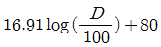
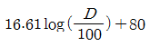
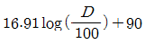
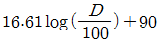
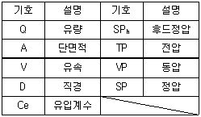
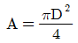
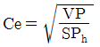
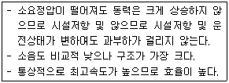
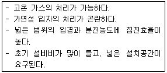
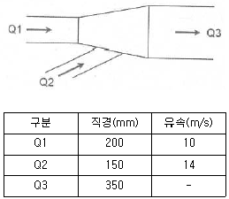

산업위생관리산업기사 (2011-03-20 기출문제)
1과목: 산업위생학 개론
1. 다음 중 상호관계가 있는 것을 올바르게 연결한 것은?
- 레이노 현상 - 규폐증
- 파킨슨씨 증후근 - 비소
- 금속열 - 산화아연
- C5 dip - 진동
(정답률: 74%)

2. 다음 중 산업위생관리의 목적 또는 업무와 가장 거리가 먼 것은?
- 직업성 질환의 확인 및 치료
- 작업환경 및 근로조건의 개선
- 직업성질환 유소견자의 작업 전환
- 산업재해의 예방과 작업능률의 향상
(정답률: 78%)
3. 다음 중 작업강도를 분류하는 2가지 척도로 가장 적절한 것은?
- 총에너지소비량과 심박동률
- 실동률과 총에너지소비량
- 심박동률과 심전도
- 계속작업의 한계시간과 실동률
(정답률: 59%)
4. 다음 중 산업스트레스의 관리에 있어서 개인차원에서의 관리 방법으로 가장 적절한 것은?
- 긴장 이완훈련
- 개인의 적응수준 제고
- 사회적 지원의 제공
- 조직구조와 기능의 변화
(정답률: 72%)
5. 미국국립산업안전보건연구원(NIOSH)의 중량물 취급 작업에 대한 권고치 가운데 감시기준(AL)이 40kg일 때 최대허용기준(MPL)은 얼마인가?
- 60kg
- 80kg
- 120kg
- 160kg
(정답률: 84%)
6. 다음 중 산업안전보건법상 보건관리자의 직무에 해당하지 않는 것은?
- 건강장해를 예방하기 위한 작업관리
- 물질안전보건자료의 게시 또는 비치
- 근로자의 건강관리ㆍ보건교육 및 건강증진 지도
- 산업재해발생의 원인조사 및 재발방지를 위한 기술적 지도ㆍ조언
(정답률: 57%)
7. 산업안전보건법령상 사업주는 근골격계 부담 작업에 근로자를 종사하도록 하는 경우에는 몇 년마다 유해요인조사를 실시하여야 하는가?
- 1년
- 2년
- 3년
- 5년
(정답률: 64%)
8. 200명의 근로자가 1주일에 40시간 연간 50주로 근무하는 사업장이 있다. 1년 동안 30건의 재해로 인하여 25명의 재해자가 발생하였다면 이 사업장의 도수율은 얼마인가?
- 15
- 36
- 62.5
- 75
(정답률: 69%)
9. 다음 중 최초 직업성 암으로 보고된 음낭암의 원인 물질은?
- 검댕
- 구리
- 수은
- 납
(정답률: 84%)
10. 다음 중 정교한 작업을 위한 작업대 높이의 개선 방법으로 가장 적절한 것은?
- 팔꿈치 높이를 기준으로 한다.
- 팔꿈치 높이보다 5cm 정도 낮게 한다.
- 팔꿈치 높이보다 10cm 정도 낮게 한다.
- 팔꿈치 높이보다 5~10cm 정도 높게 한다.
(정답률: 78%)
11. 다음 중 직업성 질환에 관한 설명으로 틀린 것은?
- 재해성 질병과 직업병으로 분류할 수 있다.
- 직업상 업무로 인하여 1차적으로 발생하는 질병을 원발성 질환이라 한다.
- 장기적 경과를 가지므로 직업과의 인과관계를 명확하게 규명할 수 있다.
- 합병증은 원발성 질환에서 떨어진 다른 부위에 같은 원인에 의한 제2의 질환을 일으키는 경우를 말한다.
(정답률: 67%)
12. 산업피로의 발생요인 중 작업부하와 관련이 가장 적은 것은?
- 작업 강도
- 작업 자세
- 적응 조건
- 조작 방법
(정답률: 65%)
13. 다음 중 바람직한 교대제로 볼 수 없는 것은?
- 각 조의 근무시간은 8시간씩으로 한다.
- 교대방식은 역교대보다 정교대가 좋다.
- 야간 근무의 연속은 일주일 정도가 좋다.
- 연속된 야간 근무 종료 후의 휴식은 최저 48시간을 가지도록 한다.
(정답률: 86%)
14. 다음 중 작업환경측정 및 정도관리규정상 소음수준의 측정단위로 옳은 것은?
- dB(A)
- dB(B)
- dB(C)
- dB(V)
(정답률: 88%)
15. 다음 중 사무실 공기관리에 있어 각 오염물질에 대한 관리기준으로 옳은 것은?
- 8시간 시간가중평균농도를 기준으로 한다.
- 단시간노출기준을 기준으로 한다.
- 최고노출기준을 기준으로 한다.
- 작업장의 장소에 따라 다르다.
(정답률: 72%)
16. 다음 중 산업피로의 예방 대책으로 적절하지 않은 것은?
- 작업과정 중간에 적절한 휴식시간을 추가한다.
- 가능한 한 동적인 작업으로 전환한다.
- 각 개인마다 동일한 작업량을 부여한다.
- 작업환경을 정비하고 정리ㆍ정돈한다.
(정답률: 79%)
17. 다음 중 근육의 에너지원으로 가장 먼저 소비되는 것은?
- 포도당
- 산소
- 글리코겐
- 아데노신 삼인산(ATP)
(정답률: 56%)
18. 다음 중 근골격계 질환의 발생에 관한 설명으로 틀린 것은?
- 손목을 반복적으로 무리하게 사용하는 작업에서 발생하기 쉽다.
- 무거운 물건을 들어 올리거나 밀고 당기고 운반하는 작업에서 많이 발생한다.
- 오랜 기간 동안 부자연스러운 작업자세로 작업하는 경우에 많이 발생한다.
- 진동이 적고, 고온의 작업조건에서 주로 발생한다.
(정답률: 87%)
19. 다음 중 산업위생의 주요 활동에서 맨 처음으로 요구되는 활동은?
- 인지
- 예측
- 측정
- 평가
(정답률: 71%)
20. 메틸에틸케톤(MEK) 50ppm(TLV 200ppm), 트리클로로에틸렌(TCE) 25ppm(TLV 50ppm), 크실렌(Xylene) 30ppm(TLV 100ppm)이 공기 중 혼합물로 존재할 경우 노출 지수와 노출기준 초과여부로 옳은 것은? (단, 혼합물질은 상가작용을 한다.)
- 노출지수 0.95, 노출기준 미만
- 노출지수 1.⑤, 노출기준 초과
- 노출지수 0.3, 노출기준 미만
- 노출지수 0.5, 노출기준 미만
(정답률: 82%)
2과목: 작업환경측정 및 평가
21. 검출한계(LOD)에 관한 내용으로 옳은 것은?
- 표준편차의 3배에 해당
- 표준편차의 5배에 해당
- 표준편차의 10배에 해당
- 표준편차의 20배에 해당
(정답률: 65%)
22. 작업장에서 입자상 물질은 대개 여과원리에 따라 시료를 채취하며 여과지의 공극보다 작은 입자가 여과지에 채취되는 기전은 여과이론으로 설명할 수 있다. 다음 중 여과이론에 관여하는 기전과 가장 거리가 먼 것은?
- 중력침강
- 정전기적 침강
- 간섭
- 흡착
(정답률: 39%)
23. 어떤 공장의 유해 작업장에 50% heptane, 30% methylene chloride, 20% perchloro ethylene의 중량비로 혼합 조성된 용제가 증발되어 작업환경을 오염시키고 있다면 이 작업장에서 혼합물의 허용 농도는? (단, heptane TLV 1600mg/m3, methylene chloride TLV 670mg/m3, perchloro ethylene TLV 760mg/m3이다.)
- 977mg/m3
- 984mg/m3
- 992mg/m3
- 1016mg/m3
(정답률: 74%)
24. 소음의 특성을 정확히 평가하기 위하여 주파수 분석을 실시해야 한다. 1/1옥타브 밴드로 분석시 중심 주파수(fc)가 2000Hz일 때 1/1옥타브 밴드 주파수 범위(하한주파수(f1) ~ 상한 주파수(f2))로 가장 적합한 것은? (단, f2=2f1, fc(f1×f2)1/2)
- 1014.4 ~ 2028.8Hz
- 1214.4 ~ 2428.8Hz
- 1414.4 ~ 2828.8Hz
- 1614.4 ~ 3228.8Hz
(정답률: 53%)
25. 흡착제인 활성탄의 제한점에 관한 설명으로 가장 거리가 먼 것은?
- 휘발성이 매우 큰 저분자량의 탄화수소 화합물의 채취 효율이 떨어짐
- 암모니아, 에틸렌, 염화수소와 같은 고비점 화합물에 비효과적임
- 비교적 높은 습도는 활성탄의 흡착용량을 저하시킴
- 케톤의 경우 활성탄 표면에서 물을 포함하는 반응에 의해서 파괴되어 탈착률과 안전성에서 부적절함
(정답률: 33%)
26. 다음 중 1차 표준기기(primary standard)가 아닌 것은?
- 폐활량계(spirometer)
- 건식가스미터(dry gas meter)
- 가스치환병(mariotte bottle)
- 유리피스톤미터
(정답률: 81%)
27. 공기 중 납을 채취한 여과지 시료를 분석하고자 한다. 회수율을 구한 결과 95%이고 시료 중 납 분석 값은 0.⑤mg 이었다. 시료를 회수율로 보정한 값은?
- 0.0⑤0mg
- 0.0475mg
- 0.⑤00mg
- 0.⑤26mg
(정답률: 45%)
28. 흡광광도측정에서 최초광의 80%가 흡수되었다면 흡광도는?
- 0.7
- 0.8
- 0.9
- 1.0
(정답률: 68%)
29. 0.01N - NaOH 수용액 중의 [H+]는 몇 mole/L인가?
- 1×10-2
- 1×10-13
- 1×10-12
- 1×10-11
(정답률: 62%)
30. 목재공장의 작업환경 중 분진농도를 측정하였더니 5, 7, 5, 7, 6, 7 ppm이었다. 기하평균은?
- 6.1ppm
- 6.3ppm
- 6.5ppm
- 6.7ppm
(정답률: 75%)
31. 옥내작업장의 온도를 측정한 결과 자연 습구온도 30℃, 혹구온도 28℃이었다. 습구혹구 온도지수(WBGT)는?
- 28.4℃
- 28.6℃
- 29.4℃
- 29.8℃
(정답률: 83%)
32. 실리카겔이 활성탄에 비해 갖는 장ㆍ단점으로 옳지 않은 것은?
- 수분을 잘 흡수하는 단점을 가지고 있다.
- 활성탄으로 채취가 어려운 아닐린, 오르쏘-톨루이딘등의 아민류나 몇몇 무기물질의 채취가 가능하다.
- 추출액이 화학분석이나 기기분석에 방해물질로 작용하는 경우가 많다.
- 이황화탄소를 탈착용매로 사용하지 않는다.
(정답률: 55%)
33. 코크스 제조공정에서 발생되는 코크스오븐 배출물질을 채취하는데 많이 이용되는 여과지는?
- PVC막여과지
- 은막여과지
- MCE막여과지
- 유리섬유여과지
(정답률: 68%)
34. 분진발생 작업장에서 2.5L/min의 유량으로 5시간 동안 시료를 포집하고 시료채취 전ㆍ후의 여과지 무게를 측정한 결과 각각 0.0721g 과 0.0742g이었다. 작업장 분진농도는?
- 1.4mg/m3
- 1.8mg/m3
- 2.4mg/m3
- 2.8mg/m3
(정답률: 50%)
35. 다음 중 시간가중평균 소음수준(dB(A))을 구하는 식으로 가장 적합한 것은? (단, D:누적소음노출량(%)이다.)




(정답률: 66%)
36. 비누거품미터를 이용하여 시료채취펌프의 유량을 보정하였다. 부렛의 용량이 1000mL이고 비누거품의 통과시간은 28초일 때 유량(L/min)은?
- 2.14
- 2.34
- 2.54
- 2.74
(정답률: 52%)
37. 가스교환 부위에 침착할 때 독성을 일으킬 수 있는 물질로서 평균 입경이 4㎛인 입자상 물질을 무엇이라 하는가? (단, ACGIH 기준)
- 흡입성 입자상 물질
- 흉곽성 입자상 물질
- 복합성 입자상 물질
- 호흡성 입자상 물질
(정답률: 71%)
38. 변이계수에 관한 설명으로 옳지 않은 것은?
- 통계집단의 측정값들에 대한 균일성, 정밀성 정도를 표현한 것이다.
- 평균값에 대한 표준편차의 크기를 백분율로 나타낸 수치이다.
- 측정단위에 따라 적절한 보정상수를 적용하여 산출한다.
- 평균값의 크기가 0에 가울수록 변이계수의 의의는 작아진다.
(정답률: 35%)
39. 음력이 1.0W인 작은 점음원으로부터 500m 떨어진 곳의 음압레벨(SPL : dB)은? (단, SPL=PWL-20logr-11)
- 약 50
- 약 55
- 약 60
- 약 65
(정답률: 73%)
40. 직경분립충돌기의 장, 단점으로 옳지 않은 것은?
- 호흡기의 부분별로 침착된 입자크기의 자료를 추정할 수 있다.
- 채취준비 시간이 짧고 시료의 채취가 쉽다.
- 입자의 질량크기분포를 얻을 수 있다.
- 되튐으로 인한 시료 손실이 일어날 수 있다.
(정답률: 73%)
3과목: 작업환경관리
41. 소음방지를 위한 흡음재료의 선택 및 사용상 주의 사항으로 옳지 않은 것은?
- 흡음재료를 벽면에 부착할 때 한곳에 집중하는 것보다 전체 내벽에 분산하여 부착하는 것이 흡음력을 증가 시킨다.
- 실의 모서리나 가장자리 부분에 흡음재를 부착시키면 흡음효과가 좋아 진다.
- 다공질 재료는 산란되기 쉬우므로 표면을 얇은 직물로 피복하는 것이 바람직하다.
- 막진동이나 판짐동형의 것은 도장 여부에 따라 흡음률 차이가 크다.
(정답률: 56%)
42. 전리방사선의 단위로서 피조사체 1g에 대하여 100erg의 에너지가 흡수되는 양을 나타내는 것은?
- R
- Ci
- rad
- IR
(정답률: 74%)
43. 개인 보호구에 관한 설명으로 옳은 것은?
- 보호장구 재질인 천연고무(latex)는 극성용제에 효과적이나 비극성용제에는 효과적이지 못하다.
- 눈 보호구의 차광도 번호(shade number)가 낮을수록 빛의 차단이 크다.
- 미국 EPA에서 정한 차진 평가수 NRR은 실제 작업현장에서의 차진효과(dB)를 그대로 나타내준다.
- 귀덮개는 기본형, 준맞춤형, 맞춤형으로 구분된다.
(정답률: 60%)
44. 빛과 밝기의 단위에 관한 설명으로 옳지 않은 것은?
- 광원으로부터 나오는 빛의 양을 광속이라 한다.
- 룩스는 광원으로부터 단위 입체각으로 나가는 광속의 단위이다.
- 광원으로부터 나오는 빛의 세기를 광도라고 한다.
- 광도의 단위는 킨델라(cd)를 사용한다.
(정답률: 49%)
45. 모 작업공정에서 발생되는 소음의 음압수준이 110dB(A)이고 근로자는 귀덮개(NRR=17)를 착용하고 있다면 근로자에게 실제 노출되는 음압수준은?
- 90dB(A)
- 95dB(A)
- 100dB(A)
- 1⑤dB(A)
(정답률: 73%)
46. 고열장해 중 신체의 염분손실을 충다하지 못할 떄 발생하며, 이 질환을 가진 사람은 혈중 염분의 농도가 매우 낮기 때문에 염분관리가 중요한 것은?
- 열발진
- 열경련
- 열허탈
- 열사병
(정답률: 74%)
47. 고온작업장의 고온대책에 관한 설명으로 가장 거리가 먼 것은?
- 작업대사량 : 작업량감소
- 대류 : 작업주기 증가
- 급성고열폭로 : 공냉, 수냉식 방열복 착용
- 복사열 : 방열판으로 차단
(정답률: 62%)
48. 방진대책 중 발생원 대책과 가장 거리가 먼 것은?
- 동적 흡진
- 기초 중량의 부가 및 경감
- 수진점 근방 방진구 설치
- 탄성 지지
(정답률: 43%)
49. 잠수부가 해저 30m에서 작업을 할 때 인체가 받는 절대압은?
- 3기압
- 4기압
- 5기압
- 6기압
(정답률: 84%)
50. 방진재 중 금속스프링에 관한 설명으로 옳지 않은 것은?
- 공진시에 전달율이 크다.
- 저주파 차진에 좋다.
- 감쇠가 크다.
- 환경요소에 대한 정항성이 크다.
(정답률: 45%)
51. 현재 총흡음량이 2000sabins인 작업상 벽면에 흡음재를 강화하여 총흡음량이 4000sabins이 되었다. 이 때 소음감소(noise reduction)량은?
- 3dB
- 6dB
- 9dB
- 12dB
(정답률: 37%)
52. ACGIH에 의한 발암물질의 구분기준으로 Group A3에 해당되는 것은?
- 인체 발암성 확인물질
- 동물 발암성 확인물질, 인체 발암성 모름
- 인체 발암성 미분류 물질
- 인체 발암성 미의심 물질
(정답률: 67%)
53. 자외선에 관한 설명으로 옳지 않은 것은?
- UV-B의 영향으로 피부암이 유발될 수 있다.
- 일명 화학선이라고 한다.
- 약 100~140mm파장의 범위의 전자파로 UV-A, UV-B, UV-C로 구분한다.
- 성층권 오존층은 200mm이하의 자외선만 지구에 도달하게 한다.
(정답률: 43%)
54. 적절히 밀착이 이루어진 호흡기 보호구를 훈련된 일련의 착용자들이 작업장에서 착용하였을 때 기대되는 최소 보호 정도치를 무엇이라 하는가?
- 정도보호계수
- 할당보호계수
- 밀착보호계수
- 작업보호계수
(정답률: 69%)
55. 소음 작업장에서 소음 예방을 위한 전파경로 대책과 가장 거리가 먼 것은?
- 공장 건물 내벽의 흡음처리
- 지향성 변화
- 소음기(消音器) 설치
- 방음벽 설치
(정답률: 50%)
56. 작업환경관리를 위한 공학적 대책 중 공정 대치의 설명으로 옳지 않은 것은?
- 볼트, 너트 작업을 줄이고 리벳팅 작업으로 대치한다.
- 유기용제 세척공정을 스팀세척이나 비눗물 사용공정으로 대치한다.
- 압축공기식 임팩트 렌치 작업을 저소음 유압식 렌치로 대치한다.
- 도가지 제조공정에서 건조 후 실시하던 점토배합을 건조 전에 실시한다.
(정답률: 56%)
57. 적용화학물질은 밀랍, 탈수라노린, 파라핀, 유동파라핀, 탄산 마그네슘 등이며, 광산류, 유기산, 염류 및 무기염류 취급작업에 주로 사용하는 보호크림은?
- 친수성 크림
- 소수성 크림
- 차광 크림
- 피막형 크림
(정답률: 52%)
58. 고압환경에서 나타나는 질소의 마취작용에 관한 설명으로 옳지 않은 것은?
- 공기 중 질소 가스는 2기압 이상에서 마취작용을 나타낸다.
- 작업력 저하, 기분의 변화 및 정도를 달리하는 다행증이 일어난다.
- 질소의 지방 용해도는 물에 대한 용해도 보다 5배 정도 높다.
- 고압환경의 2차적인 가압현상(화학적 장해)이다.
(정답률: 72%)
59. 인공조명의 조명방법에 관한 설명으로 옳지 않은 것은?
- 간접조명은 강한 음영으로 분위기를 온화하게 만든다.
- 간접조명은 설비비가 많이 소요된다.
- 직접조명은 작업면에 빛의 대부분이 광원 및 반사용 삿갓에서 직접 온다.
- 일반적으로 분류하는 인공적인 조명방법은 직접조명과 간접조명, 반간접조명 등으로 구분할 수 있다.
(정답률: 74%)
60. 석탄공장, 벽돌 제조, 도자기 제조 등과 관련해서 발생하고, 폐결핵과 같은 질환에 이환될 가능성이 높은 진폐증으로 옳은 것은?
- 석면페증
- 규폐증
- 면폐증
- 용접폐증
(정답률: 67%)
4과목: 산업환기
61. 다음 중 전체 환기를 설치하고자 할 때 적용되는 기본 원칙과 가장 거리가 먼 것은?
- 오염물질 사용량을 조사하여 필요환기량을 계산한다.
- 배출공기를 보충하기 위하여 실내공기와 동질의 공기를 공급한다.
- 공기배출구와 근로자의 작업위치 사이에 오염원이 위치해야 한다.
- 공기가 배출되면서 오염장소를 통과하도록 공기 뱇ㄹ구와 유입구의 위치를 선정한다.
(정답률: 46%)
62. 슬로트형 후드 중에서 후드면과 대상 물질 사이의 거리, 제어속도, 후드 개구면의 길이가 같을 때 필요 송풍량이 가장 적게 요구되는 것은?
- 전원주 슬로트형
- 1/4 원주 슬로트형
- 1/2 원주 슬로트형
- 3/4 원주 슬로트형
(정답률: 67%)
63. 송풍기로 공기를 불어 줄 때 공기속도는 토출개구면의 직경이 d일 경우 개구면으로부터 30d 떵러진 곳에서의 속도는 약 1/10로 감소한다. 그렇다면 공기를 흡인할때에는 흡인개구면의 직경이 200mm 일 때 개구면에서 얼마나 떨어지면 흡인속도가 약 1/10로 되는가?
- 200mm
- 400mm
- 800mm
- 6000mm
(정답률: 19%)
64. 1기압, 0℃에서 공기의 비중량을 1.293kg/m3라고 할 때 동일 기압에서 20℃일 때 공기의 비중량은 약 얼마인가?
- 0.84kg/m3
- 1.10kg/m3
- 1.2⑤kg/m3
- 1.387kg/m3
(정답률: 40%)
65. 다음 중 덕트 내에서 피토관으로 속도압을 측정하여 반송속도를 추정할 때 반드시 필요한 작료가 아닌 것은?
- 횡단측정 지점에서의 덕트 면적
- 횡단지점에서 지점별로 측정된 속도압
- 횡단측정 지점과 측정시간에서 공기의 온도
- 처리대상 공기 중 유해물질의 조성
(정답률: 40%)
66. 다음 중 환기와 관련한 식이 잘못된 것은? (단, 관련 기호는 표를 참고하시오.)

- Q=AV


- VP=TP+SP
(정답률: 76%)
67. 국소배기장치에서 후드의 유입계수가 0.8, 속도압이 45mmH2O라면 후드의 압력손실은 약 몇 mmH2O인가?
- 11.2
- 14.6
- 21.9
- 25.3
(정답률: 42%)
68. 직경 30cm의 원형 관내에 50m3/min의 공기가 흐르고 있다면 관 길이 20m당 압력손실(mmH2O)은 약 얼마인가? (단, 관의 마찰계수값은 0.019, 공기의 비중량은 1.2kgf/m3이다.)
- 7.2
- 10.8
- 18.6
- 20.4
(정답률: 44%)
69. 다음 설명에 해당하는 송풍기의 종류로 옳은 것은?

- 축류형 송풍기
- 프로펠러팬형 송풍기
- 다익형 송풍기
- 터보팬형 송풍기
(정답률: 73%)
70. 다음 설명에 해당하는 짐진장치로 옳은 것은?

- 여과집진장치
- 벤츄리스크러버
- 원심력집진장치
- 전기집진장치
(정답률: 78%)
71. 원형닥트의 송풍량이 20m3/min이고, 반송속도가 15m/s일 때 필요한 덕트의 내경은 약 몇 m 인가?
- 0.17
- 0.24
- 0.50
- 0.75
(정답률: 32%)
72. 발생원에서 비산되는 분진, 가스, 증기, 흄 등을 비산한계점 내에 있는 점에서 포집, 후드 개구부 내에 유입시키기 위하여 필요한 최소 흡입속도를 무엇이라 하는가?
- 제어속도
- 비산속도
- 유입속도
- 반송속도
(정답률: 54%)
73. 다음 중 층류에 대한 설명으로 틀린 것은?
- 유체입자가 관벽에 평행한 직선으로 흐르는 흐름이다.
- 레이놀즈수가 4000이상인 유체의 흐름이다.
- 관내에서의 속도분포가 정상 포물선을 그린다.
- 평균유속은 최대유속의 약 1/2정도이다.
(정답률: 52%)
74. 유해 작용이 다르고, 독립적인 영향을 나타내는 물질3 종류를 다루는 작업장에서 각 물질에 대한 필요 환기량을 계산한 결과 120m3/min, 150m3/min, 200m3/min이었다. 이 작업장에서 필요환기량은 얼마인가?
- 120m3/min
- 150m3/min
- 200m3/min
- 470m3/min
(정답률: 62%)
75. 피토튜브와 마노미터를 이용하여 측정된 덕트 내 동압이 20mmH2O일 때, 공기의 속도로 약 몇 m/s인가? (단, 덕트내의 공기는 21℃, 1기압으로 가정한다.)
- 14
- 18
- 22
- 24
(정답률: 48%)
76. [그림]과 같이 Q1과 Q2에서 유입된 기류가 합류관인 Q3로 흘러갈 때, Q3의 유량(m3/min)은 약 얼마인가? (단, 합류와 확대에 의한 압력손실은 무시한다.)

- 33.7
- 36.3
- 38.5
- 40.2
(정답률: 56%)
77. 흡연실에서 발생되는 담배연기를 배기시키기 위해 전체환기를 실시하고자 한다. 흡연실의 크기는 2m(H)×4m(W)×4m(L)이고, 필요한 시간당 공기 교환율을 10회로 할 경우 필요한 환기량은 약 몇 m3/min인가? (단, 안전계수는 3으로 한다.)
- 5.3
- 16
- 320
- 960
(정답률: 40%)
78. 세정집진장치 중 물을 가압ㆍ공급하여 함진배기를 세정하는 방법과 가장 거리가 먼 것은?
- 층진탑
- 벤츄리 스크러버
- 임펠러형 스크러버
- 분무탑
(정답률: 45%)
79. 일반적으로 슬롯후드는 개구면의 폭과 길이의 비가 얼마 이하일 경우를 말하는가?
- 0.1
- 0.2
- 0.3
- 0.4
(정답률: 58%)
80. 다음 중 공기정화장치인 사이클론에 대한 점검사항으로 적절하지 않은 것은?
- 원추 하부에 분진이 퇴적되어 있는가?
- 세정수는 규정량을 분출하고 있는가?
- 내부에 역류를 일으키는 돌기나 요철이 있는가?
- 외부 상동 및 원추 하부에 마모로 인한 구멍이 발생하였는가?
(정답률: 50%)